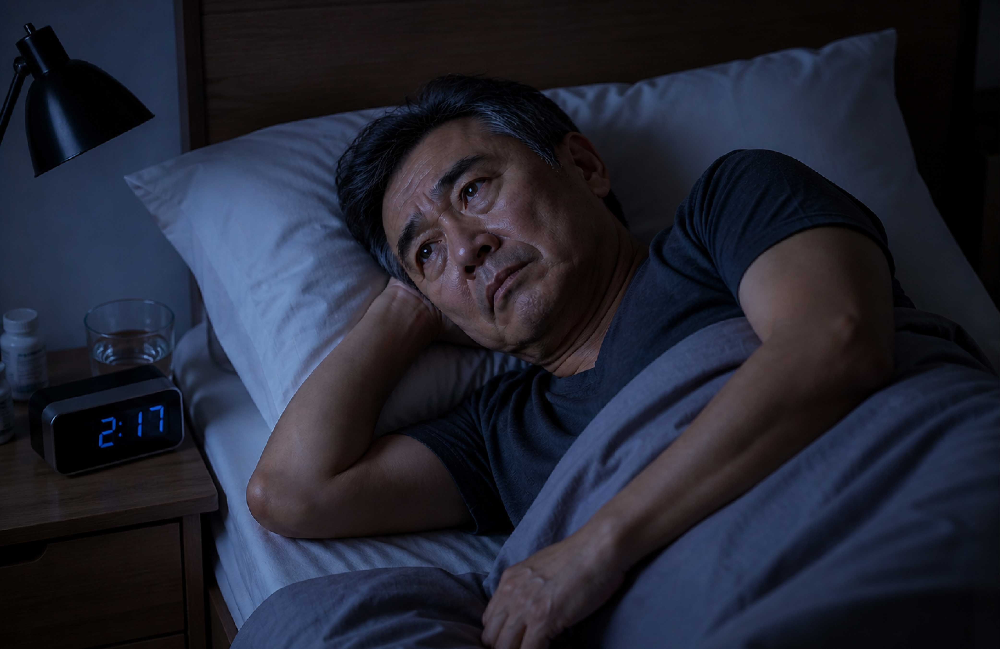
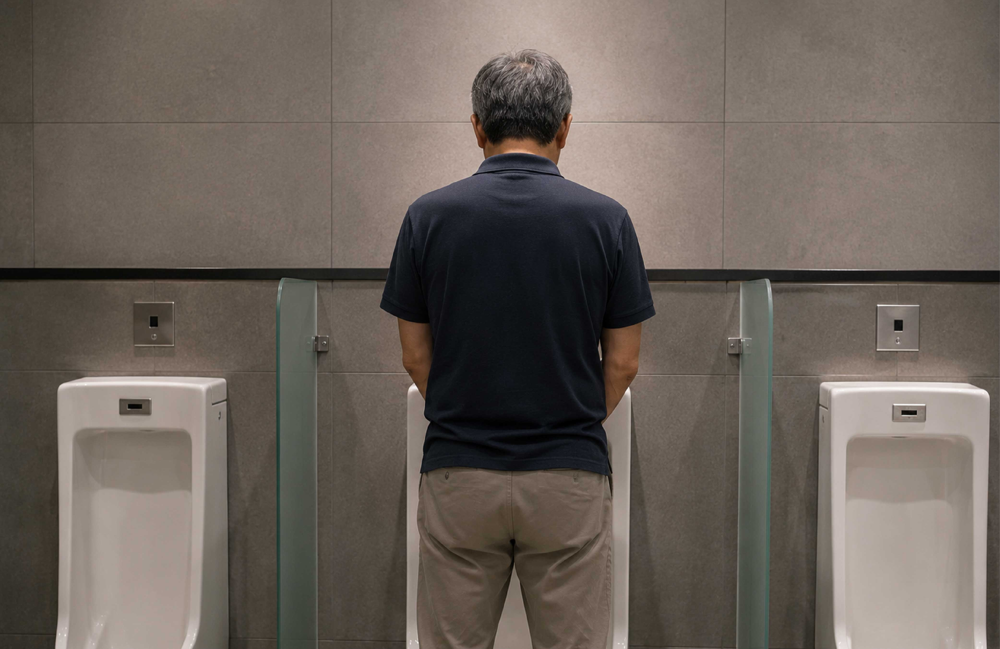
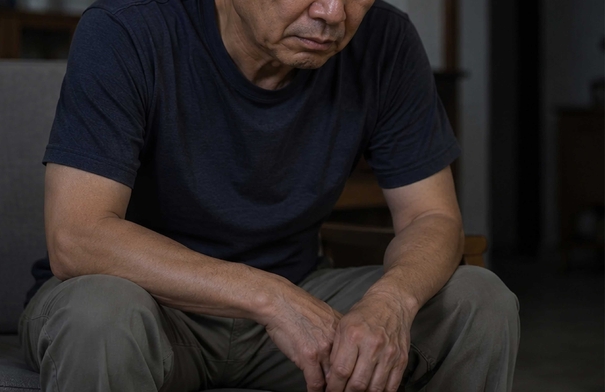
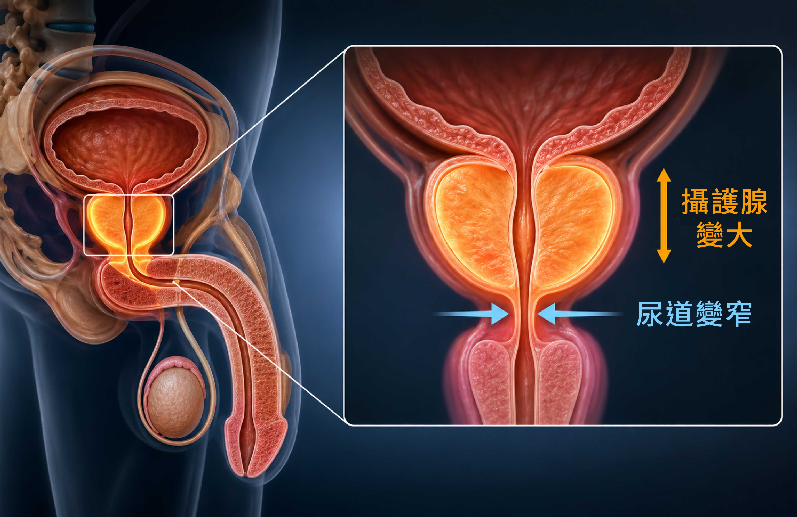
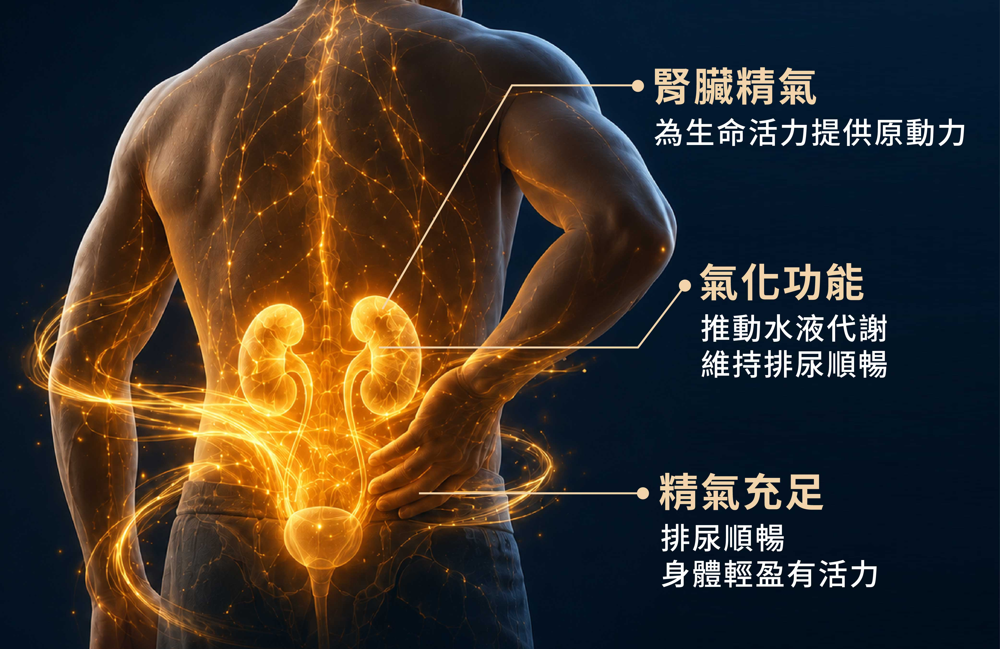
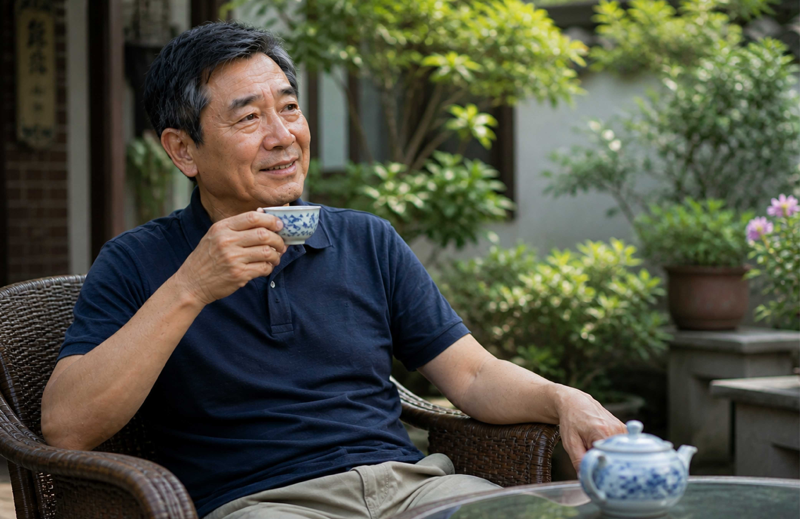

半夜跑廁所、白天累到不行⋯⋯他62歲才發現，問題沒那麼簡單！
從不敢出遠門，到重新享受退休生活！一位退休老師的親身經歷
「我已經不記得，上一次能安心睡個好覺，是什麼時候了。」
這句話，是林先生在診所候診室裡，對著旁邊素昧平生的人說出口的。說完，他自己都愣了一下。一個62歲的退休國小老師，平常在台上講課從不怯場，卻沒想到，有一天竟會為了男人最難開口的事，煩惱到連生活都受到影響。

「年紀大了嘛，正常的。」這句話，讓多少男人一忍再忍？
退休後的第一年，林先生過得很愜意，有空就去公園打打太極，下午泡杯茶看看新聞。兒子在台中工作，假日偶爾回來，孫子剛學會走路，每次來家裡都是一陣歡笑。
但不知道從什麼時候開始，林先生發現，自己的生活好像出現了一些變化。
尤其到了晚上，明明已經準備休息，卻總是反覆起身、往廁所跑。一開始，他沒太放在心上。
「年紀大了嘛，正常的。」身邊不少老朋友都是這麼說，他也就這樣安慰自己。

但時間一久，林先生開始覺得不對勁。
有時候才剛躺回床上沒多久，又得重新爬起來；好不容易睡著，卻又斷斷續續醒來好幾次，沒辦法好好休息。
最讓他無奈的，是隔天的精神。
明明已經退休，不需要再像以前那樣早起趕著上班，卻還是常常覺得疲倦。
下午坐著看電視，沒多久就開始打瞌睡；到了公園，本來想多打幾套太極，卻總覺得提不起勁。
「以前上班再忙，都沒像現在這麼沒精神。」
林先生原本以為，這些都只是退休後生活節奏改變造成的。直到有一天，他才發現，自己已經開始為了這件事，放棄很多原本期待的生活。
花蓮之旅他沒去、麻將局也坐不住⋯⋯退休生活竟越過越綁手綁腳？
比起身體上的疲倦，更讓林先生難受的，是那些說不出口的顧慮。
有一次，兒子提議全家一起去花蓮玩三天兩夜。林先生表面上笑著說好，心裡卻開始盤算：火車要坐好幾個小時，人多，不好在廁所待太久；到了風景區，行程一個接著一個，萬一自己狀況不好，廁所也不好找，會不會掃了全家人的興？
想來想去，他最後還是找了理由推掉：「腳有點不舒服，下次再說啦。」
兒子沒有多問，但林先生心裡其實很失落。

不只旅遊，就連和老朋友聚會，也開始讓他有些壓力。
以前退休後最期待的，就是三五好友泡茶、聊天，偶爾打幾圈麻將。但那陣子，他常常坐沒多久就想起身，注意力也很難一直放在牌桌上。
有幾次，朋友還開玩笑問他：「老林，你今天怎麼一直坐不住？」
林先生只是笑笑，沒有多說。
他開始減少喝水量，睡前兩小時滴水不沾，能不出門就不出門，萬一真的要出門，在外面能不喝水就不喝水，但即便做到這樣，坐立難安的感覺還是在。
直到某天下午，他坐在客廳，看著孫子開心地跑來跑去，突然想起自己退休前的願望。他原本希望退休後能有更多時間陪家人、到處走走，把以前忙著因為上班沒時間做的事，一件一件完成。
怎麼現在反而變得什麼都要考慮半天，甚至什麼都不能做？那天，他終於決定認真面對自己的狀況。

教書30多年不怕開口，62歲的他卻在診所門口猶豫了好久
進診所之前，林先生在門口站了大概五分鐘。
他知道自己這個年紀，身體多少會有一些變化。但真正要走進診間，把平常不好意思說出口的困擾告訴醫生，心裡還是有點彆扭。
最後，他鼓起勇氣走了進去。
醫師仔細了解他的日常生活與身體狀況，也安慰他，中老年男性隨著年齡增加，身體自然就可能會出現這樣的變化，這不是什麼丟臉的事，也不是做錯了什麼才會變這樣。

醫生除了開了藥，也建議林先生可以搭配日常保養一起調整。林先生依照醫師的建議，開始調整自己的生活習慣，也開始研究起以前很少認真注意的事。
男人上了年紀，平常到底該怎麼補？
老祖宗流傳下來的滋補食材，現在竟有了新吃法！
某次和老朋友聊天時，有人提起了「鱉」這項傳統補養食材。
林先生這一代的人，對鱉其實不陌生。小時候在鄉下，只要有人身體虛，長輩就會燉鱉湯，說是「大補」。在老一輩的飲食文化中，鱉一直是相當有代表性的滋補食材。只是現在生活型態不同了，要買一整隻鱉回來處理，不但麻煩，料理時間也長，對一般家庭來說並不方便。
林先生沒想到，現在竟然有更方便的營養補充型態。
他開始好奇：傳統滋補食材，和現代男性營養補給，究竟可以怎麼搭配？
於是，他花了一些時間研究常見的男性保養成分。查閱相關資訊後，發現男性日常營養補給其實有許多不同選擇。
其中有些是老一輩熟悉的傳統食材，也有些是現代營養學經常討論的營養成分。
在亞洲飲食文化中有很悠久的歷史。除了燉湯，現代也有將相關原料加工成粉狀或膠囊等不同營養補充型態的方式。
參與人體多項正常生理作用的胺基酸，跟身體循環有關，很多男性保健的資料中都會提到。除了可由日常飲食攝取，也常見於不同的營養補充配方。
原產於南美洲安地斯山區的植物，也是許多男性營養產品常見的植物性原料，許多人會拿來當作日常的體力補給。
人體必需的微量元素之一，參與多項正常生理作用，在男性健康中扮演至關重要的角色，在營養學裡佔有一席之地。
多元不飽和脂肪酸的一類。魚類及部分植物性食物都含有相關脂肪酸，是維持均衡飲食需認識的營養成分之一。
「鱉可補癆傷，壯陽氣，大補陰之不足」── 中醫古籍記載

林先生研究後才發現，原來熟齡男性保養不只有一種方法，也不能只看單一營養成分。日常飲食是否均衡、生活習慣是否規律，以及補充方式是否適合自己，都是值得考慮的事情。
那時候他也沒有想太多，就只是花心思了解自己的生活習慣與營養需求後，在配合醫師的指示的同時，也開始嘗試日常補養。
從半信半疑到認真研究，那個早晨，他看著手機上的「06:30」，愣了整整一分鐘
前兩週，林先生老實說沒有感覺到什麼明顯差異，他提醒自己要有耐心：「這不是藥，是保養，調養身體需要時間。」
大約到了第三週，有天早上醒來，他看了一下手機，發現是早上六點半。昨晚大概十一點睡的，中間有沒有起來？
他想了很久，確認只有一次。凌晨三點左右，他沒有在廁所待太久，一切都很順暢，身體也沒有悶脹感。回去躺下，他居然很快又睡著了，一直到早上六點半。
再過了一個月，更讓他驚喜的，是整個人的狀態。因為睡眠品質慢慢改善，他白天的精神明顯好多了，以前打太極打到一半就想坐著休息，現在能完整打完一套，還有餘力跟老朋友站在公園聊上半個小時。

原本沒去成的花蓮之旅，讓他重新找回理想中的退休生活
退休後的第三年春天，兒子又提起花蓮的計畫。這次，林先生沒有猶豫太久，他覺得現在的狀況跟以前不一樣了。
他說：「去啊，我去。」老婆轉頭看他，有點訝異，然後笑了。
那趟旅行，他們在太魯閣走了將近四個小時。他沒有一直在盤算下一個廁所在哪裡，只是走著，看著，偶爾拉著孫子的小手，告訴他那塊大石頭是怎麼來的。
晚上住在花蓮市區的民宿，他半夜只起來了一次，沒有拖拖拉拉，回去躺下，五分鐘內又睡著了。
早上七點，他比所有人都早醒，去外面買了早餐，坐在民宿的小庭院裡，泡了杯茶，突然覺得，退休生活其實還有很多值得期待的事情。

台灣有多少男人正在過這種生活？數字比你想像的還驚人
林先生的經歷，其實在台灣許多中老年男性身上並不是個案。根據醫學統計，男性在40歲之後，攝護腺便開始出現自然的生理變化；到了50歲，約有一半的男性會感受到身體發出警訊；到了70歲之後，這個比例更高達七成以上。
如果你或身邊的親友，夜晚睡覺中途需要起床超過兩次以上，連基本的排泄需求都不順暢，可能就要多加留意。
這些都不是理所當然的老化，也不是只能忍受的宿命。
那個每天早起泡茶的男人，已經不記得上一次睡不著是什麼感覺
林先生現在還是每天早起。不是因為睡不著，而是習慣了。他喜歡在太陽剛爬上屋頂那個時刻，泡一壺茶，坐在窗邊，安安靜靜地迎接新的一天。
他說，以前那段日子，最讓他難受的不是身體的不舒服，而是那種無力感，覺得自己的身體不受自己控制，生活的半徑一天天縮小，不得已只能放棄很多事情。
「身體缺的東西就是需要慢慢補回來。你不能期待一個禮拜就有變化，但只要有耐心，持續下去，慢慢就會感覺到。」
年紀增加是必然的事，但對自己的照顧、對生活的講究，可以從現在開始。這才是現在的他覺得最重要的事。